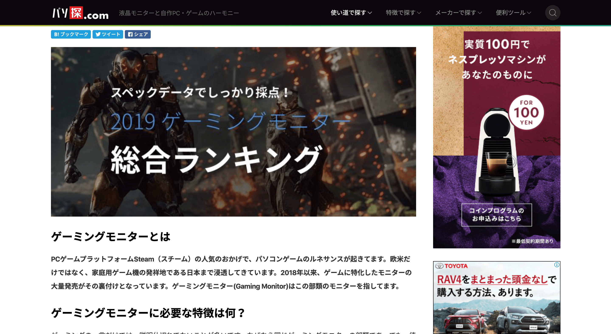

PASOTAN CASE STUDY
Pasotan.com is a side project of our team that started in January 2019. It was aiming to introduce pc monitor information, which was just a member's hobby at first. I participated in the project when we decided to turn this potential site into a real product.
Design goals
Pasotan was a blog site at the beginning. It was just presenting content made by editors, and users come to the site by searching the keywords that they are interested in.
Our goal was to help this site gain more traffic and build a business model that can make profits.
My role
I led a small team with a developer and a content producer from September 2019 till now. Since it was just a light and agile team, I served as the product manager and UX/UI designer
My main work fields were to:
- Define the business strategy for the product
- Design the information architecture and the user experience
- Run a growth hacking plan with the content producer
Design challenge
To make a redesign for Pasotan, there were several challenges to face:
- What is the feasible business model for Pasotan?
- In this business model, how to organize the content for the site?
- What can we do to help this content get found by more users?
Research
Since Pasotan was not a highly invested project, it was necessary to find a Blue Ocean Market, which had enough traffic but less competition. So I did some marketing research through ahrefs.com


The result showed that compared with the general keyword like "gaming pc", the keyword "self-making pc" had less competitive pressure but still enough users. Less paid traffic meant our organic traffic could be shown to potential users easier, and less cost when we are doing SEM.

Also, I found "self-making pc" had more search result than others on youtube, which not only showed the popularity of the field but also pointed out a good way to deliver the content that we were going to generate.
Last but not least, "self-making pc" was highly associated with "pc monitor", which we were doing right then. So we can quickly transfer the site to the new field at less cost.
After presenting the research results to the team members, I decided to turn the site into an affiliate site providing information about self-making pc and receiving affiliate revenue when sending users to other online e-commerce sites.
Information architecture design
To understand what are the essential information and what are the relationships between them during somebody makes his pc build, I built my personal computer together with my colleagues. That really cost a lot of money and time, somehow proved what we were doing is valuable.

From the pc build period, we summarized two things essential for users who build their pc by themselves: guide for building pc, or just refer to others cases (still under development, sorry but will not be discussed in the case study) . These two things later formed the most important two parts of the IA system.

After that, I used the mind map to help me build the IA system of the site.
UX & UI design
The guide for PC building was the critical function in this redesign. To make the experience efficient and enjoyable, I was focusing on how to make a continuous user flow without interruption. As a result, we built the PC Build Tool like this.
Usability test
To check if the PC Build Tool does assist the users who want to make a build, I invited ten colleagues to participate in the usability test.
The result was inspiring. After fixing some UX issues, all the participants had given positive feedback, and 4 of them used the tool to build a pc by themselves!

Growth hacking
After usability was confirmed, the project came to its final challenge: how to get users?
Our old way was to seek the forums and posts where users may be interested in building a pc, and publish the introduction of the tools to attract them. But after two weeks' attempt, we just got single-figure UV from this method.
I tried to think in another angle: the poor conversion rate was mainly due to the lack of traffic the posts themselves. Unless we start to spam can't we get enough users. Maybe if we find somewhere with massive traffic and make it automatically generate external links for us?
Finally, we solved the challenge by designing several useful widgets for bloggers in the pc field. Those widgets could help bloggers not only quickly present pc builds on their site, but also embed affiliate codes (which is the main revenue for them) into the pc parts link with simple steps.
We contacted more than 500 bloggers with email, and over 10% of them replied with joy. Now the widget traffic and the builder PVs are over 30% of entire website PVs. And the external links they generated have also raised our page ranking in SERP.
Result
Compare to the data of September when I took over Pasotan, the number of unique users went up about 200% without publishing new articles.